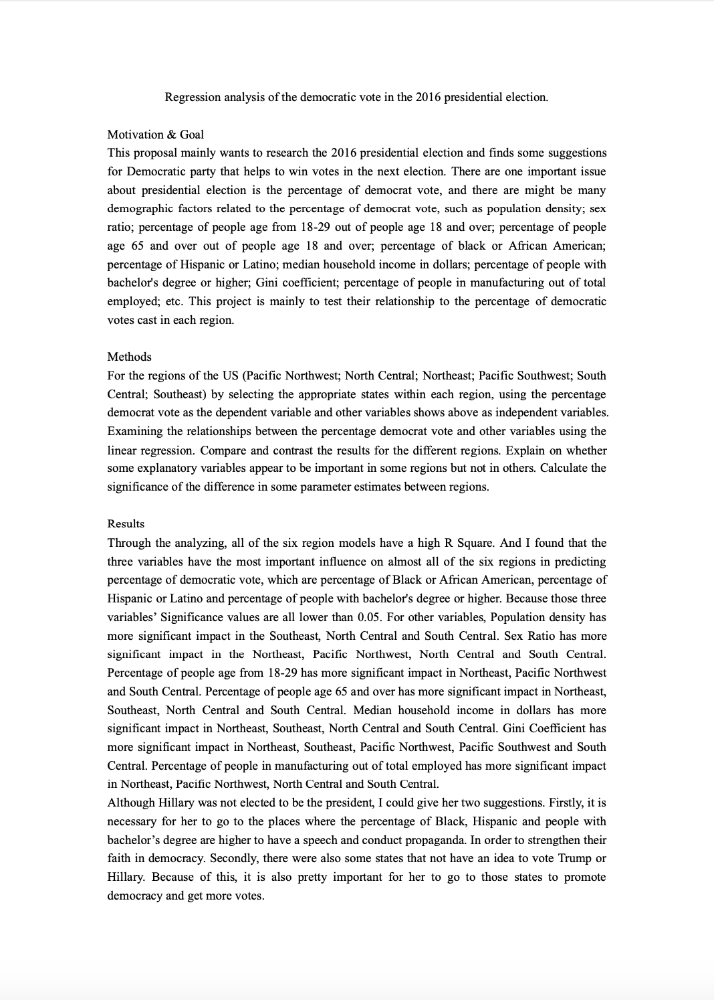

This project mainly wants to research the 2016 presidential election and finds some suggestions for Democratic party that helps to win votes in the next election. There are one important issue about presidential election is the percentage of democrat vote, and there are might be many demographic factors related to the percentage of democrat vote, such as population density; sex ratio; percentage of people age from 18-29 out of people age 18 and over; percentage of people age 65 and over out of people age 18 and over; percentage of black or African American; percentage of Hispanic or Latino; median household income in dollars; percentage of people with bachelor's degree or higher; Gini coefficient; percentage of people in manufacturing out of total employed; etc. This project is mainly to test their relationship to the percentage of democratic votes cast in each region.
